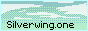
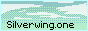
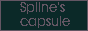

-[*] Обозреватели страниц всемирной паутины|Tutmondaj TTT-legiloj: [Ссылка|Hiperligo]
-[*] Графический редактор NEOPAINT|Grafiko redaktilo NEOPAINT: [Ссылка|Hiperligo]
-[*] Сайт, который позволяет просмотреть сайт в IE 5.5-11|Retejo, kiun permesas rigardi retejo en IE 5.5-11: [Ссылка|Hiperligo]
-[*] Веб-анализатор WebSiteOptimization.com|TTT-analizilo WebSiteOptimization.com: [Ссылка|Hiperligo]
-[*] Веб-анализатор W3C|TTT-analizilo W3C: [Ссылка|Hiperligo]
-[*] Lua-минификатор|Lua-minifier: [Ссылка|Hiperligo]
-[*] Упаковщик текстур Free texture packer|Teksturoj pakisto Free texture packer: [Ссылка|Hiperligo]
-[*] Удалить вокал/Разделить музыку Vocalremover.org|Forigi voĉo/Dispartigi muziko Vocalremover.org: [Ссылка|Hiperligo]
-[*] Сайт с текстурами|Retejo kun teskturoj: [Ссылка|Hiperligo]
-[*] Сайт с бесплатными изображениями|Retejo kun senkostaj grafikoj: [Ссылка|Hiperligo]
HTTP
![[Frenzy, FreeBSD LiveCD]](pic/frenzy_btn.png) ![[Hugeping.tk]](pic/hugeping_btn.png)  
GEMINI

|